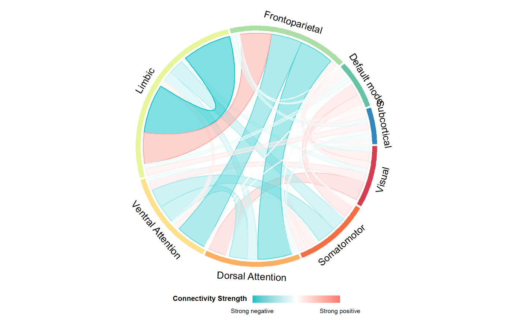

vizChord
vizChord.RdVisualizing brain connectivity profiles with a chord diagram
Usage
vizChord(
data,
hot = "#F8766D",
cold = "#00BFC4",
width = 1200,
height = 1200,
filename = "conn.png",
colorscheme,
title,
leg.height = 100,
ncol = 1,
nrow = 1,
colorbar_title = "Connectivity Strength"
)Arguments
- data
a vector of edge values with a length of 78, 4005, 7021, 23871 or 30135.
- hot
color for the positive connections.Set to
#F8766Dby default.- cold
color for the negative connections.Set to
#00BFC4by default.- width
width (in pixels) of each connectogram. Set to 1200 by default.
- height
height (in pixels) of each connectogram . Set to 1200 by default.
- filename
output filename with a *.png file extension. Set to
conn.pngby default- colorscheme
an optional vector of color names or color codes to color code the networks.
- title
a vector of strings to be used as title
- leg.height
height (in pixels) of legend, in pixels. Set to 100 by default. Not used for single row data
- ncol
number of columns in the plot. Not used for single row data
- nrow
number of rows in the plot. Not used for single row data
- colorbar_title
title for the colorbar legend
Details
This function takes a matrix (NROW=number of edges in the connectome; NCOL=number of edges in the connectome) of edge values and visualizes the average network-to-network connectivity in a chord diagram.
Examples
results=runif(7021, min = -1, max = 1)
vizChord(data=results, filename="FC_chord119.png")
